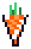
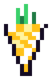
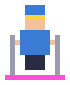
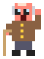
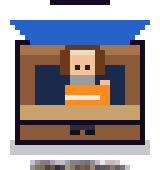

Everything inside the game, laid out like the booklet that came in the box. All 56 stops from Missoula to the Alien DJ's mothership, every map zoomed all the way out, every opening screen, all 13 bosses, all six mini games, and the real numbers behind the shop, the slots, the fuel and the avalanche.
Tap any picture to see it full size. The maps open at full resolution so you can trace every run, lift, current and parade route.
Jak, the 1972 Thiokol Spryte that came to life as a snowcat jackalope.
The road trip
Tour map
56 stops on one long road trip: Montana, Wyoming, Colorado, Utah, Idaho, Washington, Oregon and California, out across the Pacific and down into the abyss, Hawaii, and then a rocket ride past the Moon and Mars to every outer planet, the Record Cloud and the Alien DJ's mothership. 13 bosses guard the state lines and the big crossings. The Alien DJ stole the record collection and stashed one record at every stop, so every win brings one home. Beat a boss to open the road ahead, and the state-line bosses bring new crew. 3 bonus night stops open up once you clear their daytime version.
The real map of the western states, with Hawaii and outer space in inset panels. Tap to open it big.
56 levels
The stops
Each card shows the opening screen you see before the level starts, plus the whole map zoomed out. Open the map to see where Jak starts and where the golden carrot hides. Mountains, two downtown parades, a desert, the surf, the sea floor, the inside of the Titanic, a volcano and four stops in space.
Reading the badges
Night lit by lift lights, with a starry summit skyLights out a pitch-black zone, only the headlamp shows the waySnowfall snow piles up into avalanchesSteep slopes push Jak back; one surprise avalanchePowder deep snow slows Jak downGas cans the party generator burns fuelCliffs rock bands you have to drive aroundOpen bowls wide-open terrain above the treesParade downtown: follow the route and beat the clockOn the water Jak floats on pontoons and slides, so steer earlyUnderwater the sea floor: currents, coral and sharksInside the Titanic corridors, bulkheads and wrecked roomsGlowing sea a bioluminescent night where the Grumps are jellyfishBonus night opens once you clear the daytime stopDesert dunes, slip faces and dust devilsVolcano lava bombs land wherever a red ring shows upZero gravity the stick fires a thruster and Jak drifts
This update
What's new
The latest changes to the tour, and the rules that go with them.
Mini games in the main game NEW
All six mini games now live inside The Legend of Jak, but only in developer mode.
Enter the developer code (CARROT1972) under ENTER CODE on the player screen. A gold GAMES button shows up in the top bar right away.
The Games menu lists every mini game before you pick one: Ski Down, Sky Launch, Snowcat Sessions, Send It DH, Surf Sesh and Vehicle Recovery. It links to this field guide too.
You can also open it from Missoula HQ on the tour map and from inside the HQ Workshop (MINI GAMES button).
A mini game runs full screen. ◀ GAMES goes back to the list, BACK TO JAK goes back to where you were. Each one keeps its own best scores on the device.
Turn developer mode off (DEV OFF) and the menu disappears again.
Tap a stop, go straight in NEW
On the tour map, one tap on any open stop jumps straight to its opening card. No more waiting for Jak to drive there.
The PLAY and FIGHT buttons, and Space or Enter, work the same way.
Jak still shows up parked at the last stop you played.
Stick: left or right CHANGED
The CENTER stick spot is gone from the main game. Pick LEFT or RIGHT on the player screen.
Anyone who had CENTER picked is moved to LEFT automatically.
The mini games keep their own stick settings.
The record heist NEW
After the origin story, the Alien DJ steals BK Love and Zootech's whole record collection and runs one state ahead of you, dropping a record at every stop.
Win a stop to get its record back. The spinning record on the map turns into that stop's own icon, and the track goes into the Record Crate and the map soundtrack.
New stops in Idaho, Washington and Oregon, two new state-line bosses (Sasquatch and the Giant Beaver), and a run past Jupiter, Saturn, Uranus, Neptune and Pluto to the Record Cloud, the mothership and a two-round fight with the Alien DJ.
Jupiter has storm winds, Saturn is zero gravity, Uranus and Pluto have low gravity, and Neptune has supersonic wind.
What you see
Game screens
Every stop along the way, from the title card to the dance floor.
Instruction booklet
How to play
The rules of the mountain, with the exact numbers the game uses. Distances are in game pixels; Jak is about 24 pixels long.
Controls
Arrows / WASDDrive Jak. On a phone, drag the stick or anywhere on the screen. The stick sits on the LEFT or the RIGHT (pick it on the player screen); the old CENTER spot is gone.Tour mapTap any open stop and you go straight to its opening card. Jak no longer drives there first. Tap Missoula HQ or a locked stop to read about it.LFire the laser once it is charged (needs Lasers from the Workshop).SpaceStart the level from the opening card, or BASS blast in a boss fight.Click / tapIn boss fights, fires a laser at the spot you tap.PauseStops everything. Full screen fills the whole display.BaconEats a Pocket Bacon to get a heart back.JuiceDrinks a Carrot Juice: 10 seconds of invincibility.F / GFlaming Antlers and the Fogger, once you have bought them.

Carrots, joy and parties
Each disco carrot is worth +100 points, +1 Workshop carrot and +20 joy (25 with Solstice on the decks).
At 100 joy (5 carrots) a dance party starts. Skiers and dancers you have picked up become the crowd.
A party lasts 5.4 s + 0.7 s per DJ Party point, plus up to 4 s more for a big crew (0.2 s per crew member).
When the party ends you get 100 points per crew member and 1 Workshop carrot per 3 crew (Acid Annie adds 2 more).
Grumps caught near the party turn into dancers for +200 points. A Yeti that gets caught is worth +500.
Every party makes the mountain harder: one more Grump shows up, and Jak and the Grumps both get faster.

The golden carrot
After your third party, the golden carrot appears at the top of the mountain, marked on every trail map in this guide. Grab it to clear the mountain.
Worth +2,500 points and +10 Workshop carrots.
Clearing a mountain opens the next stop on the tour map.
You can keep partying after you clear it to farm more carrots.

Crew and pull
Skiers, boarders and dancers near Jak hop on and follow him. How far the music reaches:
Starts at 46 px, plus 0.7 px per point of joy and 2 px per crew member (up to 15).
+60 px during a party, +14 px per Subwoofer upgrade.
DJ Pull changes it by 14 px per point above or below 3.
In a lights-out zone the pull drops to zero. Nobody can hear you in the dark.

Grumps and hearts
You start with 3 hearts, plus one per Roll Cage (up to 5).
A Grump that catches Jak takes 1 heart and knocks 2 crew off the truck (only 1 with Big Rig Ray driving). Jak then flashes safe for 1.8 s.
Grumps chase at 20 px/s plus 6 per level, topping out at 56. Deep Danny slows them by 20%.
Lose every heart and the run is over. Pocket Bacon or a Ski Patrol visit puts a heart back.
How fast Jak drives
Base speed is 80 px/s plus 4 per level (up to level 6), then +10% for each Tracks upgrade, times the driver's Speed.
Currents (pale chevrons in the Pacific and on the Titanic) are the fast lane: 2.1 times normal speed.
Powder slows Jak to between 59% and 95% depending on the driver.
Steep slopes pull Jak back downhill. A grippy driver barely notices.
Out of gas: 65% speed. Frozen by a Yeti snowball: 45%.
Fuel
Only on mountains with the Gas cans badge. The party generator runs on a 100-point tank.
Burns 1.5 per second, or 2.4 during a party. A full tank lasts about 67 s on its own.
Each Fuel Tank upgrade burns 18% less. Diesel Dot burns 30% less; Nitro Nell burns 15% more.
6 gas cans per mountain, each worth +60.
Run dry and the power cuts out: the music stops, Jak slows to 65%, and one crew member walks off every 1.3 s.
Glowing night sea stops: Huntington Beach at Night, Catalina Channel at Night, The Pacific at Night. These are bonus levels that open once you clear the daytime stop.
At night the laser charges 20% faster and reaches 35% farther.
Brighton, Sundance and Steamboat have lights-out zones. Only Jak's headlamp cuts the dark, a few headlamp skiers glow in the trees, and Grumps carry flashlights so you can spot them.
The summit of a night mountain shows a starry sky and the moon.
Avalanches
Snowfall mountains (Montana Snowbowl, Bridger Bowl, Grand Targhee, Jackson Hole, Winter Park, Arapahoe Basin, Snowbird, Brighton, Palisades Tahoe, Kirkwood, Mammoth Mountain) have a Snowpack meter at the bottom of the screen. It fills in 2.5 minutes. At 80% you get a warning: SNOWPACK UNSTABLE. At 100% the mountain lets go, the meter resets, and it starts filling again.
Steep mountains without snowfall get one surprise slide somewhere between 80 and 140 seconds in.
What happens:
3.6 s of rumble. The screen shakes harder and harder and chunks of snow fall.
2.4 s for the wall to sweep down the screen.
If Jak is more than 360 px above the base, the slide carries him all the way down in a 3.2 s ride. Your crew holds on. You keep your carrots and hearts, but you have to climb back up.
If Jak is near the bottom already, it misses: WHEW!
Rumble 3.6 sWall 2.4 sRide to the base 3.2 s
Wildlife and help
Yeti: first shows up 55 to 85 s in, then every 70 to 110 s. A snowball hit freezes Jak to 45% speed for 1.3 s and knocks one crew member off. Catch him in a party and he grooves for +500.
Polar bear: about once a minute, never during a party. POLAR BEAR! flashes, you get 1.3 s to move, then it charges at 215 px/s. A swipe counts as a Grump hit.
Ski Patrol: first visit 30 to 50 s in, then every 45 to 75 s. Restores a heart, or +200 points if you are already full. Unk's radio calls them twice as often.
Off the mountain the polar bear's job goes to a rogue wave in the surf, a shark underwater and on the Titanic, dust devils in the desert and on Mars, space junk in orbit, rogue asteroids in the belt and meteors on the Moon. Ski Patrol becomes a lifeguard, a park ranger, a repair drone or a mission medic.

Base and summit
The Info booth at the base gives a new tip every time you drive up to it.
Park at the lodge door to open the Workshop mid-run.
Tip-giving skiers only hang out at the base and the summit, so the slopes stay clear.
Each level opens on a title card and waits for you to press Start.
Parade days
Downtown Missoula and Downtown Bozeman are downtown parades. Follow the pink route and hit every checkpoint in order before the clock runs out.
The clock starts at 28 s and 38 s. Each checkpoint adds time (5 s and 6 s), +300 points and +2 Workshop carrots.
Floats roll along the route, some the wrong way, and block the street. Bump one and a crew member falls off. Cut around the block instead.
No Yeti, bears or Ski Patrol downtown. The sidewalks are packed and the neighbors hate the bass.
On and under the water
Huntington Beach: sets of waves roll in and push Jak back toward the sand. Get past the break; the gold is off the end of the pier.
Catalina Channel: Jak floats on pontoons and slides, so steer early. Grumps row dinghies and the conga line rides jet skis.
The Pacific: coral blocks Jak and every Grump. Currents are the fast lane, and a shark charges after a red ! warning.
The Titanic: the same rules inside the wreck, with bulkheads instead of coral.
Hawaii and outer space
Kilauea: lava bombs land wherever a red ring shows up. Carrot Juice makes Jak immune for a few seconds.
Low Earth Orbit and the Asteroid Belt: zero gravity. The stick fires a little thruster and Jak keeps drifting until you thrust the other way.
The Moon: low gravity, so Jak slides and floats but slows down on his own. Watch for meteors.
Mars: craters, mesas and dust devils, and the gold at Jezero Crater.
The outer planets: storm winds push Jak around Jupiter, Saturn's rings are zero gravity, Uranus and Pluto have low gravity, and Neptune blows a supersonic wind.
The Record Cloud and the mothership: the last two stops before the Alien DJ. The records float free in the Kuiper Belt, and the mothership's generator needs gas cans.
Results and ranks
When you clear a mountain you get a rank. Add up the points:
How you did
Points
No hits taken
+2
Only 1 hit taken
+1
Biggest crew was 12 or more
+1
Finished under par (2 minutes plus a bit more for bigger mountains)
+1
4 points = S rank, 3 = A, 2 = B, anything less = C. Par is 120 s plus the mountain's area divided by 12,000. Marshall's par is about 172 s; Vail's is about 391 s.
Driver plus DJ
The crew
Before each stop you pick one driver for Jak and one DJ for the decks. Stats run from 1 to 5. New crew join when you win a state-line boss.
Driver stats
Speed: top speed, from 97% (2) to 115% (5).
Powder: speed in deep snow, from 59% (2) to 95% (5).
Grip: how hard steep slopes pull Jak back. Grip 2 slides back at 43 px/s, Grip 5 only 20.
Fuel: how fast the generator burns gas. Fuel 5 burns 30% less than Fuel 3.
DJ stats
Pull: how far the music reaches. Each point above 3 adds 14 px.
Party: party length. Party 5 gives 8.9 s before the crew bonus.
Calm: how close a Grump has to be to get converted. 64 px plus 12 per point, so Calm 5 reaches 124 px.
Lights: laser range, from 82% (1) to 130% (5).
Drivers
DJs
Spend your carrots
The Workshop
Workshop carrots come from every carrot you eat, every party, golden carrots (+10) and boss wins (+30). Upgrades are permanent for your player. Each level of an upgrade costs more than the last.
Upgrade
What it does
Level 1
Level 2
Level 3
All levels
Lasers in detail
The laser charges on its own. When the LZR bar is full, press L or tap LASER and it locks onto the nearest Grump in range.
Charge time: 8 s at level 1, 6 s at level 2, 4.5 s at level 3. 20% faster at night.
Range: 115, 140 or 165 px, scaled by the DJ's Lights stat, and 35% longer at night.
A zapped Grump is stunned for 2.6 s.
Pocket Bacon
Costs 6 carrots each. You can carry up to 3.
Tap the bacon button any time, including boss fights, to get one heart back.
It will not go over your max hearts, so save it for when you are hurt.
Feeling lucky
Disco Slots
Open from the tour map, a mountain's opening card or the results screen. Bet 2, 5 or 10 Workshop carrots. Three of a kind pays out and some give a boost for your next mountain. The lounge music is an original spy-jazz tune.
Spin
Pays
Bonus next level
Odds
Every reel stop is random. Carrots show up most (30%), gold the least (6%).
The boosts
Carrot Rain: 60% more carrots on the next mountain.
No Grumps: the next mountain has no Grumps at all.
Turbo Tracks: Jak drives 20% faster on the next mountain.
Boosts last for one mountain, then they are used up.
The house edge
On average a spin pays back about 80% of the bet, so the slots slowly eat carrots over time. The boosts are the real prize. A pair always pays 1.5 times the bet, rounded down, so a 2-carrot pair gives back 3.
13 fights
The bosses
Bosses wait at the state lines and the big crossings, from the Montana-Wyoming line to the nightclub inside the mothership. Each one is a little tougher than the last. Jak fights on the road at the line, on the sea floor, on a lava road or out in space.
Jak's weapons
Laser: click or tap anywhere to fire at that spot. 2 damage, up to about 3.5 shots a second.
BASS: a sound ring that grows to 84 px around Jak. 9 damage, smashes every projectile it touches and shoves the boss back. Recharges in 1.8 s.
Jak moves freely around the road. You get your normal hearts plus Roll Cages, and Pocket Bacon works here too.
How every boss fights
Walks around the right side of the road and throws something at Jak every 1.4 to 2 s.
Every 5 to 7 s it winds up (you see it yell) and does its special move.
After a spin or charge it is DIZZY for 1.5 s: all hits do double damage. This is the moment to unload.
At half health it hits Phase 2: walks 50% faster, throws every 0.9 to 1.3 s in a fan, and does its special more often.
Touching the boss or getting hit costs a heart, then Jak is safe for 1.3 s.
Who's on the mountain
Cast of characters
The sprites, blown up so you can see every pixel.
Side quests
Mini games
Six mini games, all playable inside the main game in developer mode. Enter the code on the player screen, then tap GAMES in the top bar, or open MINI GAMES at Missoula HQ or in the HQ Workshop. The menu lists them all before you pick one.
Opening a mini game
Each one runs full screen over the main game with its own music, sound button and full screen button.
◀ GAMES goes back to the list; BACK TO JAK goes back to the map, the HQ or the Workshop, wherever you came from. Esc does the same as ◀ GAMES on a keyboard.
Best scores, the rider and the last run you picked are saved per mini game on that device.
Ski Down
SKIING
Hop off the back of Jak at the top and point it downhill. Steer with the stick or drag the screen, push down to tuck and up to slow down. Hold a direction in the air and hit TRICK. Every run has its own avalanche odds.
Riders
BK Love, Zootech, UNK, Ritz Bitz
Runs
Marshall Mtn, Bridger Bowl, Snowbird, Secret Pillows (cliff and pillow drops), The Chutes (a narrow couloir), Mogul Land, Jump Park (kickers, rails and boxes)
Night runs
All seven runs again, under the lights
Sky Launch
PARAGLIDING AND SPEED FLYING
Ski off the launch under a wing. Space inflates it, then SEND IT. Stick down-left brakes, straight down slows, down-right dives; pull out of a dive to swoop back up. Tap TRICK for a wingover, hold it for 360s, and hold plus dive to spiral.
Pilots
BK Love, Zootech, UNK, Ritz Bitz
Wings
Paraglider (long and floaty) or Speed Wing (fast and low)
Sites
Training Hill, Marshall Mtn, Bridger Ridge, Snowbird
Night flights
Marshall Mtn, Bridger Ridge, Snowbird
Snowcat Sessions
DJ GAME
Step inside the Disco Carrot booth and play a five-mix set. Pick the next track, keep it in time with the pitch fader and the jog wheel, read the crowd out the front window, and never let the music go to dead air.
DJs
BK Love (house: tracks play 10 s longer), Zootech, Ritz Bitz
Gigs
Apres Set, Night Gig
Send It DH
DOWNHILL MOUNTAIN BIKE
Four trails at a resort bike park. Pedal, pump, hop and send it: berms, tables, rock gardens and big drops. On the gnarlier trails the Grumps are out hiking.
Riders
The whole tour crew: all the drivers and DJs, plus Party Robbins
Trails
Carrot Cruiser (green: flowy rollers and small tables), Berm Burner, Rock Garden, Jackalope Line (the pro line, huge gaps)
Surf Sesh
SURFING, HUNTINGTON BEACH
Paddle out and ride sets. Stick up to climb the face, down to drop. TRICK pops you off the lip, throws snaps and cutbacks lower on the wave, and chains spins and flips in the air. Get barreled, shoot the pier, pick up paddlers and throw party waves.
Surfers
The whole tour crew: all the drivers and DJs, plus Party Robbins
Spots
Bolsa Chica, HB Pier South, HB Pier North, Hurricane Swell
Vehicle Recovery
TOWING
Jak takes the tow calls. Roll out, park, anchor Jak, run the line and hook it to a point that takes the full force, rig the safety, then start the pull and move Jak to winch the rig back onto the road.
Riggers
BK Love, Zootech, UNK (snowcat pilot: 4 hearts, more grip), Ritz Bitz